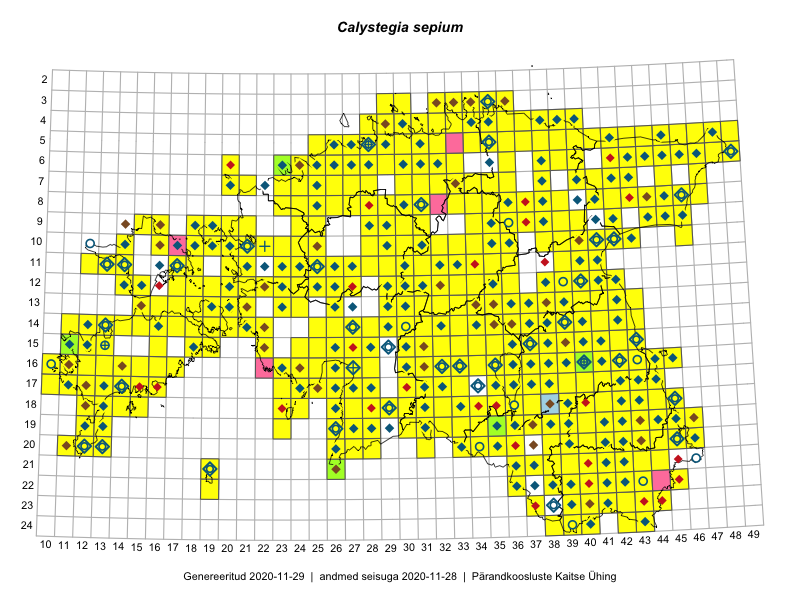

Calystegia sepium
Uuendatud: 2016-12-02
Kaardile koondatud taksonid: Calystegia sepium (L.) R.Br.; Calystegia sepium subsp. sepium (L.) R.Br.

Kaart põhineb 642 vaatlusel. Taksonit on leitud 402 ruudust.
Kuvatud viited 20 esimesele andmebaasikirjele, ülejäänud PlutoFis
- Malle Leht: 2015-07-09: : ala
- Thea Kull: 2015-07-07: 16-40: ala
- Rein Kalamees: 2015-06-08: 05-32: ala
- Malle Leht: 2015-08-02: : ala
- Peedu Saar, Liina Oja: 2015-05-21: 16-24: ala
- Peedu Saar, Toomas Kukk: 2015-05-27: 09-16: ala
- Toomas Kukk, Eerik Leibak: 2015-08-09: 14-15: ala
- Toomas Kukk, Peedu Saar: 2015-08-05: 20-11: ala
- Toomas Kukk, Thea Kull, Timo Luhamäe, Ott Luuk, Peedu Saar: 2015-06-28: 13-26: ala
- Toomas Kukk, Eerik Leibak: 2015-08-10: 13-15: ala
- Rein Kalamees, Kersti Püssa: 2015-08-31: 04-32: ala
- Rein Kalamees, Kersti Püssa: 2015-08-04: 03-33: ala
- Tiit Hallikma, Toomas Kukk: 2015-07-21: 05-45: ala
- Rein Kalamees, Kersti Püssa: 2015-09-02: 03-36: ala
- Ott Luuk, Toivo Sepp: 2015-07-29: 09-31: ala
- Ott Luuk, Peedu Saar: 2015-07-27: 11-35: ala
- Peedu Saar: 2015-07-04: 18-45: ala
- Peedu Saar: 2015-07-04: 18-44: ala
- Peedu Saar, Elle Roosaluste: 2015-07-12: 13-20: ala
- Peedu Saar: 2015-07-14: 15-38: ala